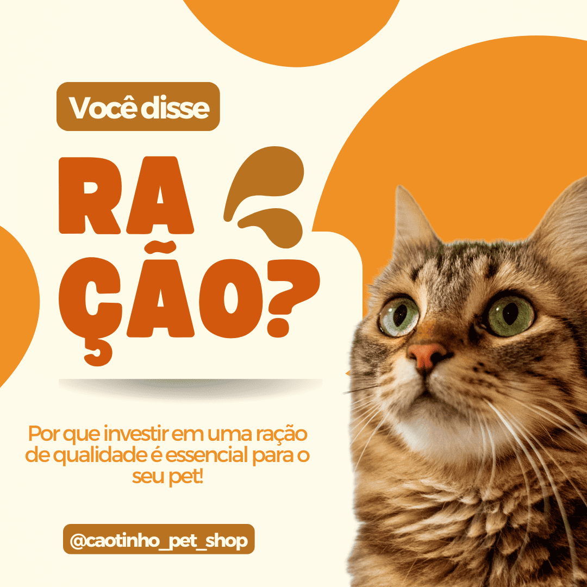
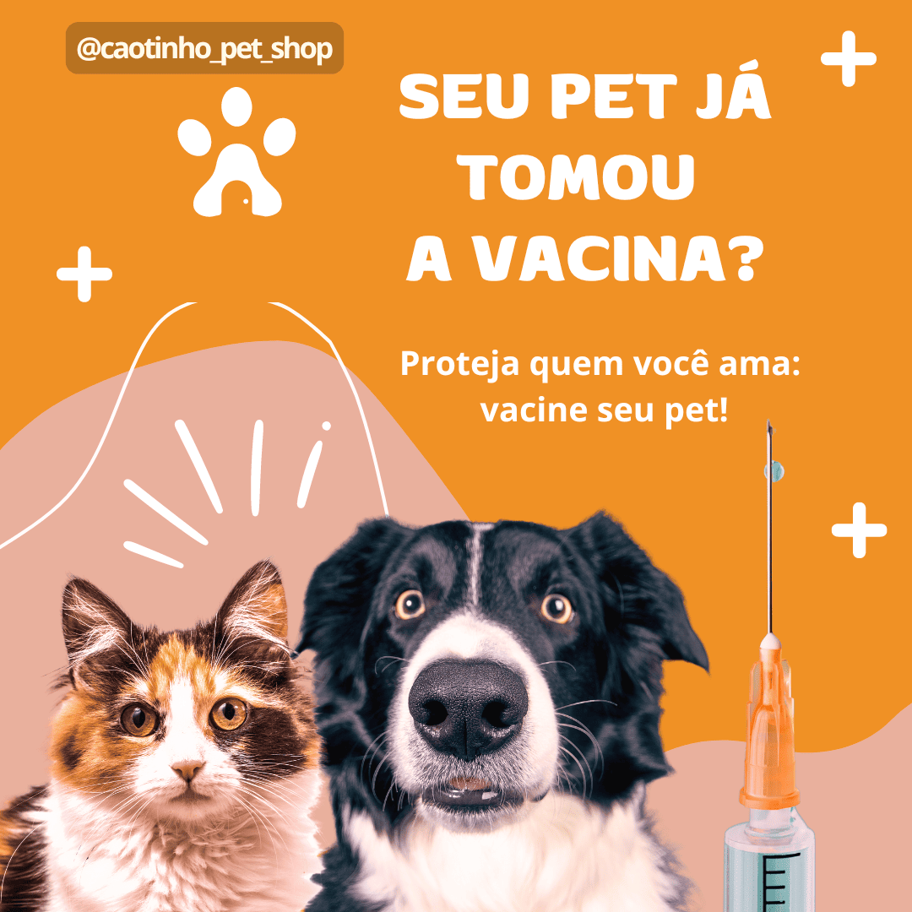

Qual a importância da ração para o seu pet?
A Importância da Ração para Gatos e Cachorros
Quando se trata de cuidar da saúde e bem-estar dos nossos amigos de quatro patas, a alimentação desempenha um papel crucial.
Assim como os humanos, gatos e cachorros precisam de uma dieta balanceada e nutritiva para manter sua saúde ideal.
A ração desempenha um papel fundamental nessa alimentação e pode fazer uma grande diferença na vida dos nossos pets.
Nutrição Balanceada
A ração para gatos e cachorros é formulada para fornecer todos os nutrientes essenciais que eles precisam em cada fase da vida.
Isso inclui proteínas, gorduras, carboidratos, vitaminas e minerais.
Cada nutriente tem uma função específica: as proteínas ajudam na construção e reparação dos tecidos, as gorduras fornecem energia e ajudam na absorção de vitaminas, enquanto os carboidratos oferecem uma fonte rápida de energia.
Saúde Digestiva
Uma ração de qualidade também contribui para uma digestão saudável.
Muitos produtos são enriquecidos com fibras e prebióticos que ajudam a manter um sistema digestivo eficiente e a promover a saúde intestinal.
Isso pode resultar em fezes mais firmes e menos odores, além de reduzir a probabilidade de problemas digestivos.
Controle de Peso
A obesidade é uma preocupação crescente para muitos pets, e a ração pode ajudar a manter um peso saudável.
Existem formulações específicas para controle de peso, que ajudam a gerenciar a ingestão de calorias e a fornecer nutrientes sem excesso de calorias.
Além disso, a ração é frequentemente dividida em porções recomendadas, o que facilita a gestão da quantidade de comida que seu pet consome.
Saúde Dental
A ração também pode desempenhar um papel na saúde dental.
Algumas formulações são projetadas para ajudar a reduzir a formação de placa e tártaro, o que pode contribuir para a saúde dos dentes e gengivas.
A mastigação das croquetas pode ajudar a limpar os dentes e manter um hálito fresco.
Dicas essenciais para deixar seu amigo limpo e feliz!
Cuidar da higiene do seu pet é fundamental para garantir não só a aparência, mas também a saúde e o bem-estar do seu amigo de quatro patas.
O banho é uma das principais formas de manter seu cão ou gato limpo e confortável, além de ser um momento de carinho e interação entre você e seu pet.
No entanto, muitos tutores ficam em dúvida sobre a frequência ideal, os produtos mais adequados e a forma correta de dar banho.
Separamos algumas dicas essenciais para tornar essa tarefa mais fácil e prazerosa para você e seu pet!
Frequência de Banhos
A frequência dos banhos varia de acordo com o tipo de animal e o ambiente em que ele vive.
Cães, por exemplo, podem tomar banho a cada 15 dias, enquanto gatos, que costumam se limpar sozinhos, podem precisar de menos banhos.
Use sempre água morna e produtos específicos para pets, evitando o uso de shampoos e sabonetes humanos, que podem causar irritação na pele dos animais.
Cuidados com a Pelagem
A escovação é um passo essencial para manter a pelagem limpa e saudável. Para cães e gatos de pelo longo, escovar diariamente ajuda a evitar nós e o acúmulo de sujeira.
Além disso, essa prática remove pelos mortos e previne o surgimento de parasitas como pulgas e carrapatos.
Pets de pelo curto também se beneficiam de uma escovação regular, ainda que menos frequente.
Limpeza das Orelhas
As orelhas dos pets acumulam cera e sujeira, podendo levar a infecções se não forem limpas com regularidade.
Use um algodão umedecido com solução apropriada (indicada pelo veterinário) e limpe delicadamente a parte externa da orelha.
Nunca introduza cotonetes ou outros objetos na parte interna do ouvido, pois isso pode causar lesões.
Corte Regular das Unhas
Unhas muito longas podem causar desconforto e até problemas nas articulações.
Para cães que não costumam desgastar as unhas naturalmente em passeios, é importante realizar cortes regulares.
Se você não se sentir confortável em cortar as unhas do seu pet, um profissional em um pet shop pode fazer isso de forma segura.
Cuidados com os Dentes
A saúde bucal dos pets é frequentemente negligenciada, mas é vital para a prevenção de doenças.
Ofereça brinquedos próprios para a limpeza dos dentes e, sempre que possível, faça a escovação com uma pasta de dente específica para animais.
Isso ajuda a prevenir o tártaro e problemas como mau hálito e infecções na gengiva.
Ambiente Limpo é Essencial
Além dos cuidados com o corpo do pet, é fundamental manter o ambiente em que ele vive sempre limpo.
Lave regularmente caminhas, cobertas, e brinquedos, pois eles podem acumular sujeira e micro-organismos que podem afetar a saúde do seu amigo.
Seguir essas dicas simples ajuda a manter a saúde, o bem-estar e a felicidade do seu pet.
Cuide da higiene dele regularmente e não hesite em procurar orientação veterinária sempre que necessário.

Vacinação: Proteja a saúde do seu pet com as vacinas essenciais!
Cuidar da saúde do seu pet vai além de carinho e alimentação adequada.
A vacinação é uma parte fundamental da rotina de cuidados e ajuda a proteger cães e gatos de doenças graves e, muitas vezes, fatais.
Além de preservar a saúde do seu amigo de quatro patas, a vacinação também protege a sua família e a comunidade ao reduzir a disseminação de enfermidades.
Por que a vacinação é importante?
As vacinas estimulam o sistema imunológico do pet, ajudando-o a combater determinadas doenças.
Elas contêm antígenos que, ao serem introduzidos no corpo, fazem com que o sistema imunológico crie defesas específicas contra vírus e bactérias.
Dessa forma, o organismo do animal estará preparado para combater essas doenças se ele for exposto a elas no futuro.
A vacinação é um método preventivo que pode evitar tratamentos caros e complicados, além de garantir a longevidade e o bem-estar do seu pet.
Vamos ver quais são as vacinas essenciais para cães e gatos.
Vacinas Essenciais para Cães
Vacina V8 ou V10 (Polivalente)
Essas são as vacinas mais comuns para cães e protegem contra várias doenças graves, como:
Cinomose: Doença viral altamente contagiosa que afeta o sistema respiratório, digestivo e nervoso.
Parvovirose: Outra doença viral grave que causa vômitos, diarreia severa e pode ser fatal, principalmente em filhotes.
Hepatite Infecciosa Canina: Infecção viral que pode prejudicar o fígado, rins e olhos.
Leptospirose: Doença bacteriana que pode ser transmitida aos humanos e afeta os rins e fígado do cão.
A diferença entre a vacina V8 e a V10 está na proteção contra subtipos de leptospirose, sendo a V10 mais abrangente.
Vacina Antirrábica
A vacina contra a raiva é obrigatória por lei no Brasil e protege tanto os pets quanto os humanos, pois a raiva é uma doença zoonótica (transmissível entre animais e pessoas), e 100% letal.
Vacina contra a Gripe Canina (Tosse dos Canis)
Indicada para cães que convivem em ambientes coletivos, como hotéis, creches e parques para cães.
Essa vacina protege contra a "tosse dos canis", uma doença altamente contagiosa que causa sintomas respiratórios.
Vacinas Essenciais para Gatos
Vacina V3, V4 ou V5 (Polivalente)
As vacinas polivalentes para gatos protegem contra doenças virais graves, como:
Rinotraqueíte: Infecção respiratória causada por herpesvírus felino, que pode gerar espirros, secreções oculares e nasais.
Calicivirose: Outra doença respiratória que pode causar úlceras na boca e dificuldade para respirar.
Panleucopenia Felina: Doença altamente contagiosa, semelhante à parvovirose em cães, causando diarreia, vômitos e morte súbita, principalmente em filhotes.
A vacina V4 também protege contra a Clamidiose, uma doença bacteriana que causa conjuntivite severa, e a V5 inclui a proteção contra
a Leucemia Felina (FeLV), uma doença que afeta o sistema imunológico e aumenta o risco de infecções e tumores.
Vacina Antirrábica
Assim como nos cães, a vacina contra a raiva é obrigatória para gatos e deve ser aplicada anualmente.
A raiva também é fatal em gatos e pode ser transmitida para humanos.
Quando Vacinar Seu Pet?
Filhotes: O primeiro ciclo de vacinas deve começar entre 6 e 8 semanas de vida, com reforços a cada 3 ou 4 semanas até completarem todas as doses necessárias.
A vacinação de filhotes é essencial para garantir que eles cresçam saudáveis.
Adultos: Após o primeiro ano de vida, a maioria das vacinas precisa ser reforçada anualmente, de acordo com a recomendação do veterinário.